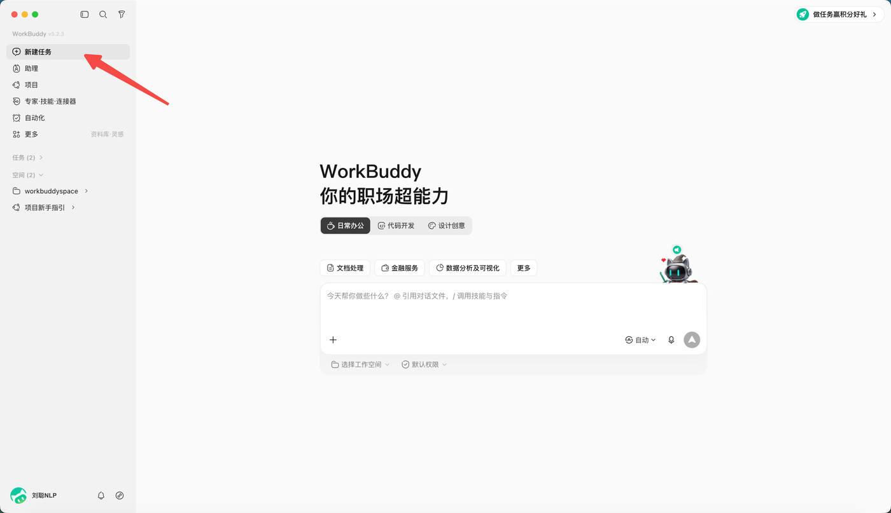
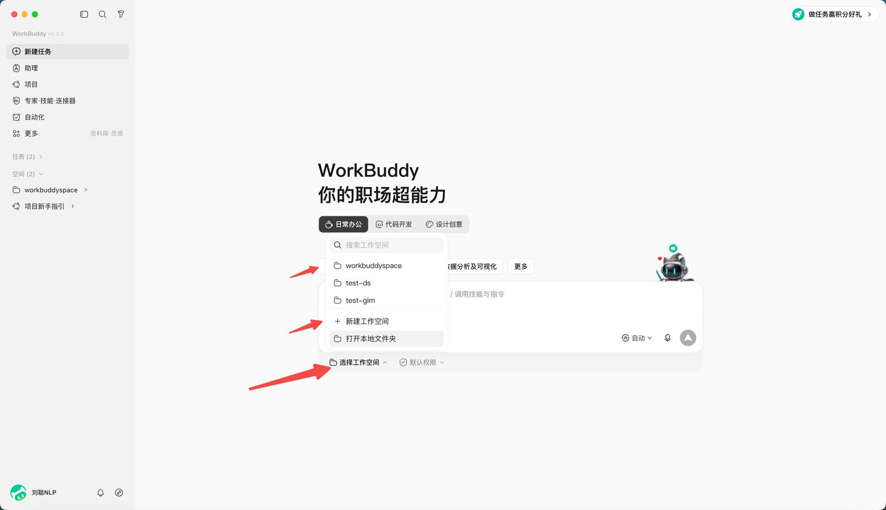
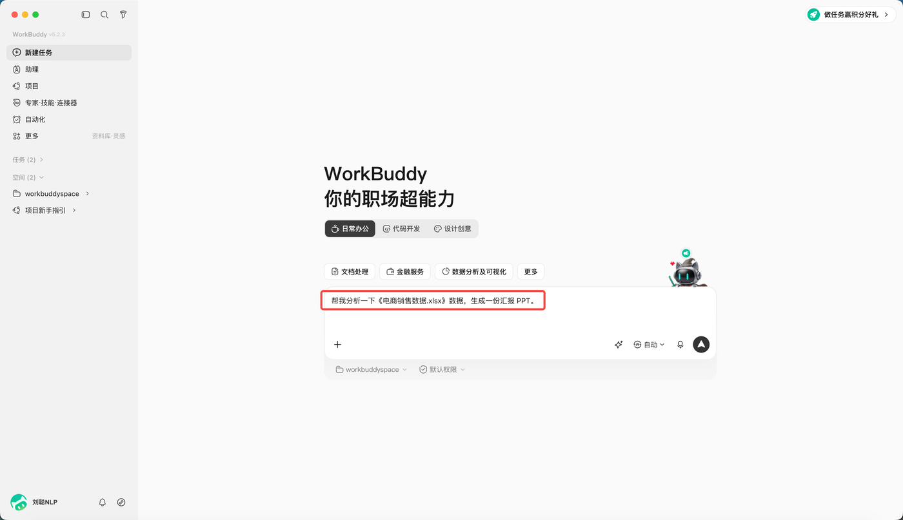
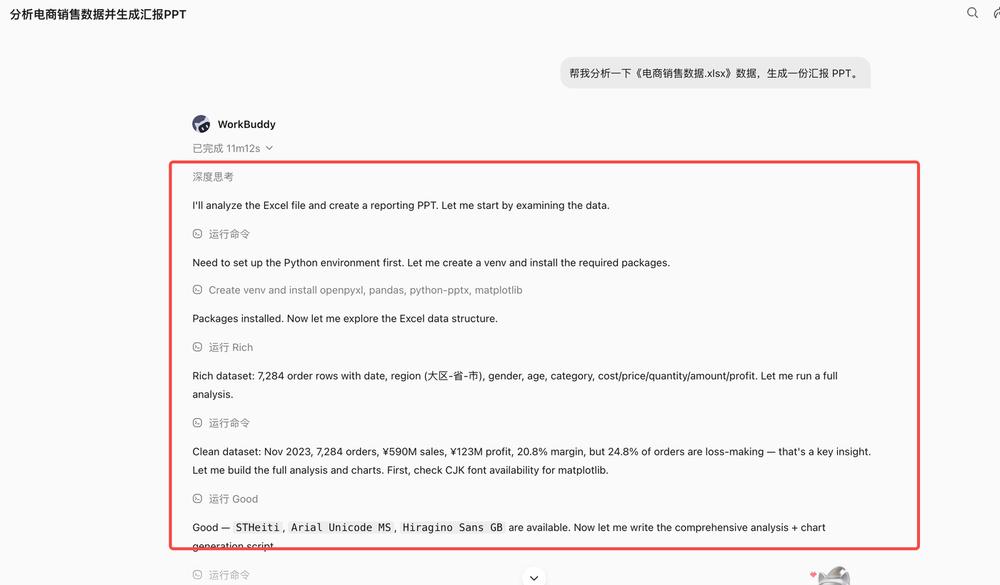
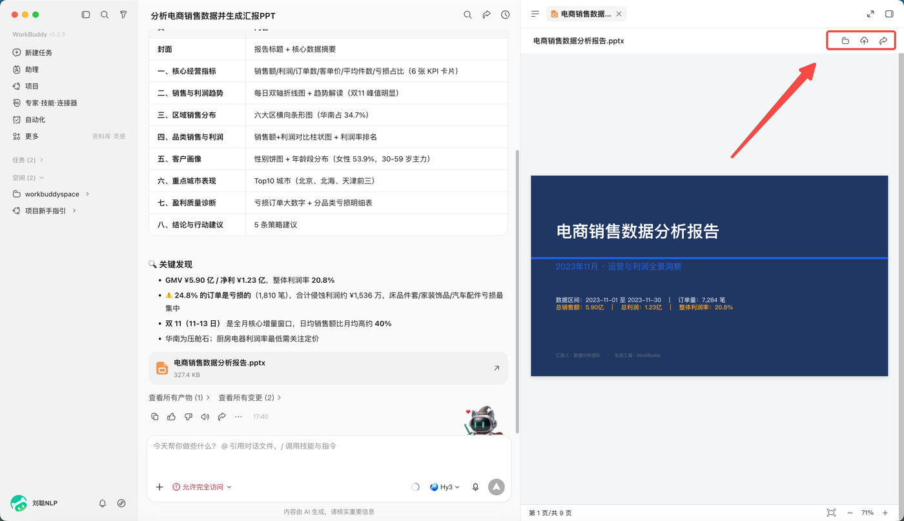

第 4 节 第一次让它真干活
学习目标
完整走一遍"派活 → 看它干 → 验收成果"，干成你的第一个任务。
这一节是第 1 天的重头戏。我们跟着做完一个完整任务，过程中你会自然认识两个重要概念：任务和工作区。
跟着做：8 步完成第一个任务
第 1 步：新建任务。 点"新建任务"。所谓"任务"，就是"一件事"——以后每件事都单独开一个任务，互不干扰，像给每件事开一个独立的抽屉。

第 2 步：选工作目录。 它会让你选一个文件夹当这个任务的"工作区"。

工作区是什么？ 就是你划给实习生的一张专用桌子：只允许它在这张桌子上干活。它默认只能读写这个文件夹里的东西，碰不到你电脑的其他文件。这既是规矩也是保护——所以第一次练习，建议专门建一个"练习"文件夹，别直接放重要文件。
第 3 步：选模式。 这个任务用"做一做"（Craft）。
第 4 步：选模型。 保持默认"自动"。
第 5 步：说清楚要它干什么。 先在这个练习文件夹里随便放一个 Excel（哪怕是几个数字），然后输入：
"帮我分析一下这个 Excel 里的数据，告诉我有什么规律，并生成一份简单的汇报 PPT。"

第 6 步：发送，然后看它干活。 中间对话区会显示它的计划、每一步在做什么；右边结果区会陆续出现它生成的文件。

第 7 步：验收。 在结果区点开它做的 PPT 看看。满意就收下；不满意就直接说哪里不好，让它改。

第 8 步：收工。 生成的文件就保存在你的工作区文件夹里，去电脑上找到它，真实存在、可以打开。
第一次干活，记住三条
- 先用练习文件夹，熟了再处理真实文件；
- 它要做什么都会显示在对话区，看不懂就停下问它，别稀里糊涂让它跑完；
- 成果先检查再用，尤其数字和结论。
本节小结
- 任务 = 一件事；工作区 = 划给它的专用文件夹，它只能在里面活动；
- 完整流程：新建任务 → 选目录 → 选模式 → 说需求 → 看执行 → 验收；
- 第一次务必用练习文件夹。
动手练习
给刚才的任务追加一句话，比如"PPT 太素了，每页加一句结论"，看它怎么修改。体会一下"不满意就打回重做"。